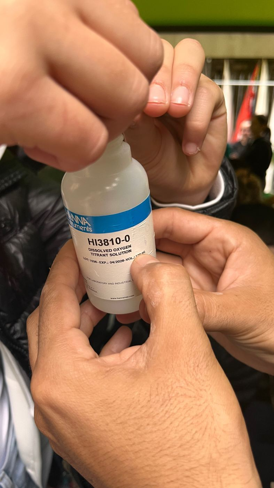

Ossigeno disciolto
mg/L
- Cosa misura
- È il gas indispensabile alla vita acquatica e alle reazioni di ossidazione che permettono al fiume di autodepurarsi. Arriva dall'atmosfera e dalla fotosintesi di piante e microrganismi, e diminuisce con la respirazione, le reazioni di ossidazione e il ritorno spontaneo in atmosfera.
- Possibili cause di superamento
- Scarichi organici civili o zootecnici non depurati, con forte consumo di ossigeno per la degradazione batterica. In un fiume a scorrimento rapido come l'Aniene una carenza così marcata indica una grave alterazione del sistema.
6 mg/L 4 mg/L
Come si legge, soglia per soglia
Un valore tra 6 e 12 mg/L è considerato ottimale. Sotto i 5-6 mg/L le forme di vita acquatiche entrano in sofferenza: la carenza favorisce organismi anaerobi, che decompongono male la materia organica e producono sostanze tossiche. Misurarlo dà anche indicazioni sui cicli di azoto, fosforo, carbonio e zolfo.